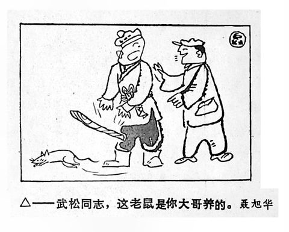
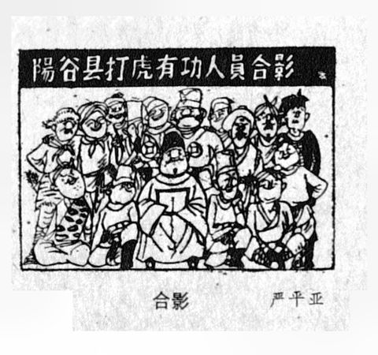
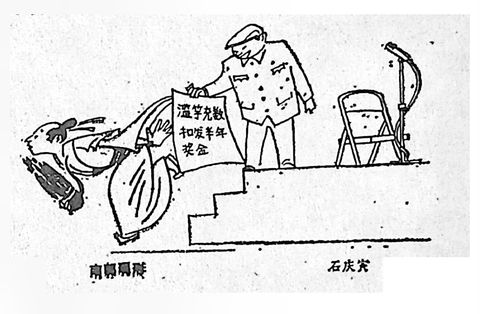
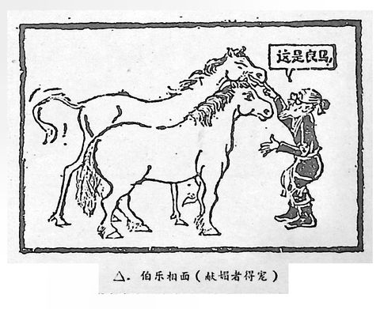
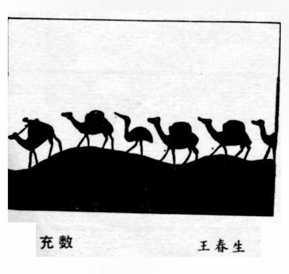

Fable, legend and history 18
-
 无题 · Untitled (“Sun Wukong: I want a diploma”)
无题 · Untitled (“Sun Wukong: I want a diploma”)
Zhu Nianci 朱念慈. Renshi (Personnel), 1985 no. 2 (whole no. 2), p. 47. -
 无题 · Untitled (“His sister-in-law's conduct is questionable”)
无题 · Untitled (“His sister-in-law's conduct is questionable”)
Tao Maolin 陶茂林. Renshi (Personnel), 1985 no. 2 (whole no. 2), p. 47. -
 「伯乐」相马 · “Bole” Judges a Horse
「伯乐」相马 · “Bole” Judges a Horse
Wu Dehua 巫德华. Renshi (Personnel), 1985 no. 2 (whole no. 2), p. 47. -

劝告 · Advice
Nie Xuhua 聂旭华. Renshi (Personnel), 1986 no. 1 (whole no. 4), inside back cover. -
 诸葛亮煽火 · Zhuge Liang Fans the Fire
诸葛亮煽火 · Zhuge Liang Fans the Fire
Unattributed. Renshi (Personnel), 1986 no. 3 (whole no. 6), p. 42. Reprinted from Wenhui yuekan (Wenhui Monthly). -
 ——论资历也该轮到您老了！ · "By Seniority, It Really Should Be Your Turn!"
——论资历也该轮到您老了！ · "By Seniority, It Really Should Be Your Turn!"
Shi Songtao 石松涛. Renshi (Personnel), 1986 no. 8 (whole no. 11), p. 48. -

合影 · Group Photo
Yan Pingya 严平亚. Renshi (Personnel), 1986 no. 12 (whole no. 15), p. 45. -

南郭现形 · Mr Nanguo Exposed
Shi Qingbin 石庆宾. Renshi (Personnel), 1987 no. 2 (whole no. 17), p. 43. -
 时兴 · All the Rage
时兴 · All the Rage
Unattributed. Renshi (Personnel), 1987 no. 3 (whole no. 18), p. 46. Reprinted from Chengdu wanbao (Chengdu Evening News). -
 第四个和尚 · The Fourth Monk
第四个和尚 · The Fourth Monk
Wang Letian 王乐天. Renshi (Personnel), 1987 no. 7 (whole no. 22), inside back cover. -

伯乐相面（献媚者得宠） · Bole Reads Faces (The Flatterer Wins Favour)
Wang Letian 王乐天. Renshi (Personnel), 1987 no. 7 (whole no. 22), inside back cover. -
 空城计下集 · The Empty City Stratagem, Part Two
空城计下集 · The Empty City Stratagem, Part Two
Hua Junwu 华君武. Renshi (Personnel), 1987 no. 12 (whole no. 27), p. 39. -
 ——看谁还说老猪丑！ · “Now Let's See Who Still Calls Old Pig Ugly!”
——看谁还说老猪丑！ · “Now Let's See Who Still Calls Old Pig Ugly!”
Chen Jinghe 陈景和. Renshi (Personnel), 1988 no. 4 (whole no. 31), p. 46. Reprinted from Renmin ribao, haiwai ban (People's Daily, Overseas Edition). -
 “心往一处想” · “All Thinking the Same Thing”
“心往一处想” · “All Thinking the Same Thing”
Unattributed. Renshi (Personnel), 1988 no. 7 (whole no. 34), p. 47. -
 《崂山道士》新编 · “The Taoist of Laoshan,” a New Version
《崂山道士》新编 · “The Taoist of Laoshan,” a New Version
Drawn by Jiang Peifeng 江沛丰; poem by Ma Liang 马良. Renshi (Personnel), 1988 no. 12 (whole no. 39), inside back cover. -

充数 · Making Up the Numbers
Wang Chunsheng 王春生. Renshi (Personnel), 1989 no. 9 (whole no. 48), inside back cover. -
 这小子想当劳模啦 · This Kid Wants to Be a Model Worker
这小子想当劳模啦 · This Kid Wants to Be a Model Worker
Unattributed. Renshi (Personnel), 1989 no. 11 (whole no. 50), p. 37. -
 孙猴儿不能提升（题图） · The Monkey Must Not Be Promoted (title drawing)
孙猴儿不能提升（题图） · The Monkey Must Not Be Promoted (title drawing)
Unattributed. Renshi (Personnel), 1990 no. 8 (whole no. 59), p. 40.